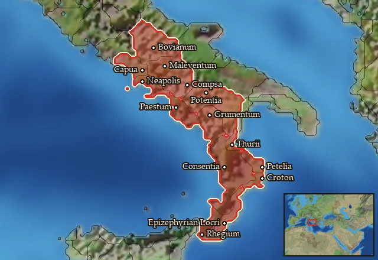

RTR: Imperium Surrectum
RTR: Imperium SurrectumRIS wiki › mercenaries
Southwest Italy
← all mercenary pools · wiki index
Mercenary pool: 8 units for hire in 14 regions.

Mercenaries
| Unit | Cost (dn) | Experience | At start | Most in pool | Added per turn | Who can hire | |
|---|---|---|---|---|---|---|---|
| Mercenary Southern Oscan Spearmen | 2,321 | 0 | 1 | 2 | 0.2844–0.5689 | Any faction | |
| Mercenary Campanian Thureophoroi | 3,151 | 0 | 1 | 2 | 0.2095–0.419 | Any faction | |
| Mercenary Campanian Hoplites | 3,239 | 0 | 1 | 2 | 0.2038–0.4077 | Any faction | |
| Mercenary Oscan Axemen | 3,880 | 2 | 1 | 2 | 0.1702–0.3403 | Any faction | |
| Mercenary Oscan Heavy Skirmishers | 3,181 | 2 | 1 | 2 | 0.2075–0.4151 | Any faction | |
| Mercenary Campanian Cavalry | 3,980 | 1 | 1 | 2 | 0.1659–0.3318 | Any faction | |
| Mercenary Oscan Light Cavalry | 3,887 | 1 | 1 | 2 | 0.1698–0.3397 | Any faction | |
| Mercenary Oscan Cavalry | 4,682 | 2 | 1 | 2 | 0.1269–0.2538 | Any faction |
Regions (14)
Bruttium · Campania · Chonia · Hirpinia · Kroton · Lokroi Epizephyrioi · Lucania · Lucania Vetus · Parthenope · Pentria-Carricinia · Poseidonia · Rhegion · Samnium · Thourioi